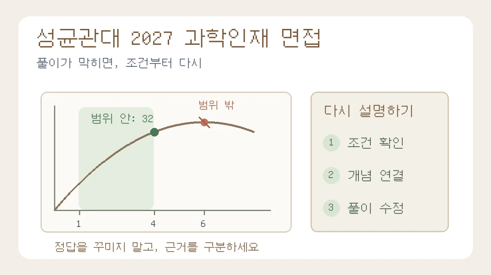

성균관대 2027 과학인재 면접, 풀이가 막히면 무엇부터 설명할까?
성균관대 2027 과학인재의 수학·과학 교과형 면접과 10월 27일 발표·11월 1일 시험을 확인합니다. 허용 구간을 놓친 가상 풀이를 고치며 조건·개념·확인된 단계로 설명하는 연습을 안내합니다.

대상은 2027학년도 성균관대학교 수시 학생부종합(과학인재)전형 지원자입니다. 2027학년도는 2026년 입시 시즌에 준비하는 전형입니다. 오늘 새 면접 제도가 발표됐다는 뜻이 아닙니다. 모집요강 공지의 게시일 표시는 2026년 5월 28일이며 본문 말미 날짜는 5월 29일입니다. 공지에는 6월 26일·8월 4일 변경사항도 적혀 있습니다. 이번에는 현재 모집요강 메뉴에 연결된 PDF와 9월 4일 대학별고사 공지·첨부를 다시 확인했습니다.[1][2][3]
“활동 내용을 열심히 외웠는데, 수학 풀이가 중간에 막히면 무엇부터 말해야 할까요?” 이번 해설은 문제의 조건을 다시 붙잡고, 확인한 근거와 미완성인 추론을 구분하는 연습에 초점을 맞춥니다. 모르는 부분을 감추거나 아무 말이나 이어 가라는 조언이 아닙니다. 먼저 지원한 전형의 공식 면접 유형을 확인한 뒤, 교과 개념으로 설명하는 연습을 별도로 해 보세요.
무엇이 공개돼 있나: 과학인재는 수학·과학 교과형 면접입니다
2027학년도 모집요강 33쪽은 과학인재 면접을 제시문 기반 수학/과학 교과형 면접으로 안내합니다. 수학 범위는 수학·수학Ⅰ·수학Ⅱ·미적분·확률과통계·기하, 과학 범위는 통합과학·물리학Ⅰ·화학Ⅰ·생명과학Ⅰ·물리학Ⅱ·화학Ⅱ·생명과학Ⅱ로 적혀 있습니다.[2] 활동의 동기와 역할을 말하는 학생부 복기만으로 이 유형의 연습을 대신하지 마세요. 이 범위 표기만으로 올해 특정 단원이나 문항 수가 확정된다고 읽어서도 안 됩니다.
모집요강 32쪽에서 1단계는 학생부 100%로 면접대상자 7배수 내외를 선발하고, 2단계는 1단계 성적 70%와 면접 30%를 반영합니다.[2] ‘학생부종합’이라는 이름과 ‘교과형 면접’은 서로 모순되는 설명이 아닙니다. 학생부를 평가하는 단계와 면접에서 제시문을 다루는 준비를 나누어 생각하면 됩니다. 면접 비율을 답변 문장 수나 합격 가능성으로 환산하지는 않습니다.
적용 대상을 먼저: 과학인재와 탐구인재를 혼동하지 마세요
- 학년도·학년: 2027학년도에 이미 지원한 수험생의 준비를 위한 글입니다. 통상적인 진급 일정에서는 2026년 고3에 해당하며 졸업생 등은 실제 지원 학년도를 기준으로 읽으세요. 2028학년도 자료를 현재 규칙으로 가져오지 않습니다.
- 전형명: 이 글은 ‘과학인재’ 대상입니다. 같은 대학의 ‘탐구인재’는 모집요강 27쪽에서 학생부 100% 일괄선발로 안내합니다. 이름이 비슷해도 면접을 같은 방식으로 준비할 전형이 아닙니다.[2]
- 모집단위: 아래 일정은 과학인재 모집단위를 오전·오후로 구분한 것입니다. 성균인재의 의예과·사범대학·스포츠과학과 일정이나 방법에 적용하지 마세요.[2][4]
풀이가 막혔을 때: 조건 → 개념 → 확인된 단계로 돌아갑니다
다음 세 줄은 편집팀의 학습용 점검 방법입니다. 대학의 공식 채점 기준이나 부분점수 보장 규칙이 아닙니다. 실제 시험에서는 주어진 문제와 진행 안내를 우선해야 합니다.
- 조건: “지금 구하는 것은 무엇이고, 변수의 허용 범위는 어디까지인가?”를 먼저 적습니다. 수치뿐 아니라 양수·정수·일정한 온도·무시하는 힘처럼 결론을 제한하는 말도 포함합니다.
- 개념: 사용할 교과 개념과 적용 이유를 한 문장으로 연결합니다. 공식 이름만 말하지 말고, 왜 이 조건에서 그 관계를 쓸 수 있는지 설명합니다.
- 확인된 단계: 직접 계산하거나 논증한 부분까지 말하고, 남은 부분을 특정합니다. 아직 증명하지 않은 추측을 완성된 결론처럼 말하지 않습니다. 계산 오류를 찾았다면 틀린 이유와 고친 결과를 분리합니다.
예를 들어 “모르겠습니다”에서 멈추는 대신 “변수 범위를 확인하는 단계에서 멈췄습니다. 이 후보값이 조건을 만족하는지 먼저 대조하겠습니다”라고 연습해 볼 수 있습니다. 다만 이 표현 자체가 정답이나 좋은 평가를 만드는 것은 아닙니다. 조건을 실제로 다시 확인하고 후속 계산이 맞는지가 중요합니다.
교육용 가상 사례: 미분은 맞았는데 최댓값은 왜 달라질까?
아래는 편집팀이 독립적으로 만든 설명용 문제와 가상 답변입니다. 성균관대 기출을 변형한 자료나 실제 수험생 답변·시험 결과가 아닙니다. 두 변의 길이가 x m와 (12−x) m인 직사각형의 넓이를 생각하되, 배치 조건 때문에 1≤x≤4라고 가정합니다. 이 범위에서 넓이의 최댓값을 설명하는 연습입니다.
수정 전: 넓이는 A(x)=x(12−x)이고, A′(x)=12−2x입니다. 미분해서 0이 되는 x=6이므로 최댓값은 36 m²입니다.
미분 계산만 보면 자연스러워 보이지만, x=6은 주어진 범위 밖입니다. 함수를 최대화하는 후보를 찾는 일과 문제의 허용 조건을 만족시키는 일은 다릅니다.
수정 후: 먼저 1≤x≤4라는 조건을 확인하겠습니다. A′(x)=12−2x는 이 구간에서 양수이므로 넓이가 증가합니다. 따라서 허용 구간의 오른쪽 끝 x=4에서 최대이고, A(4)=4×8=32 m²입니다. 처음 제시한 x=6은 범위를 벗어나므로 이 문제의 답이 아닙니다.
스스로 던질 후속 질문: 허용 구간만 1≤x≤8로 바꾸면 어떨까요? 이때는 x=6이 범위 안에 있고 그 전후로 도함수 부호가 양수에서 음수로 바뀌므로 최댓값이 36 m²입니다. 같은 식이어도 조건이 달라지면 결론이 달라집니다. 여기서 확인할 것은 빠른 정답 암기가 아니라 ‘어떤 가정 때문에 그 결론이 가능한가’입니다. 이 계산은 예시의 수학적 관계를 검산한 것이며 학생 실험을 수행했다는 뜻이 아닙니다.
과학 탐구를 복기할 때도 자신의 실제 기록에서 같은 경계를 찾아보세요. 어떤 변인을 일정하게 두었는지, 어떤 측정값과 단위를 사용했는지, 관찰값을 어디까지 일반화할 수 있는지 확인합니다. 보고서 문장을 새로 꾸미기보다 수업에서 배운 관계와 당시 자료를 다시 연결하는 연습입니다. 외부 보고서를 추가로 제출하라는 안내도, 세특 문구를 바꾸라는 조언도 아닙니다.
지금 할 일: 10월 27일 발표와 11월 1일 시험을 분리하세요
모집요강 33쪽에서 과학인재 면접대상자 및 시험장 발표 예정일은 2026년 10월 27일 화요일, 시험일은 11월 1일 일요일입니다. 날짜를 혼동하지 말고 발표 뒤 본인의 대상 여부와 시험장 안내를 확인하세요.[2]
- 1교시·오전: 반도체시스템공학과, 지능형소프트웨어학과, 배터리학과, 반도체융합공학과, 양자정보공학과, 에너지학과.[2]
- 2교시·오후: 자연과학계열, 전자전기정보공학부, 공학계열, 컴퓨터공학과, 글로벌바이오메디컬공학과.[2]
- 준비물: 모집요강은 수험표·신분증·필기구 등을 안내하면서 추후 수험생 안내사항을 참조하도록 적고 있습니다. 허용되는 신분증 종류, 입실 마감, 이동 동선과 물품 규칙은 발표되는 안내에서 각각 다시 확인하세요.[2]
오전·오후 구분은 개인별 입실 마감 시각과 같은 정보가 아닙니다. 9월 4일 공지의 첨부는 과학인재 일정은 모집요강을 참조하도록 별도 표기하고, 시험 전에 시험장 발표 공지와 수험생 안내사항을 반드시 확인하라고 안내합니다.[3][4] 이 글은 아직 발표되지 않은 개인별 시각이나 면접 준비·답변 시간을 임의로 확정하지 않습니다.
- 발표 전: 원서의 정확한 전형명·모집단위를 확인하고, 범위 안에서 이미 배운 개념으로 설명 가능한 문제를 골라 풀이를 말해 봅니다. 연습 시간은 실제 시험시간으로 오해하지 않도록 따로 표시하세요.
- 기출 활용: 입학처의 2026학년도 과학인재 기출 공지는 2026년 3월 27일 자료입니다. 원문을 직접 열어 요구하는 설명의 형태를 확인하되, 그 문항·주제·시간 배분이 2027학년도에도 반복된다고 단정하지 마세요. 이용 제한이 있어 이 글에는 공식 문항·그림·표를 싣지 않았습니다.[6][7]
- 발표 후: 입학처 수시 공지와 시험장안내에서 대상자·장소·입실 마감·지참물·유의사항을 한 묶음으로 확인합니다. 메모에는 확인일과 공지 제목도 함께 남기세요.
불확실성·다음 확인 시점과 함께 볼 가이드
확인 기준은 2026년 10월 24일입니다. 현재 확인한 공지 목록에는 5월 모집요강, 9월 대학별고사 안내 등이 있으며, 과학인재의 개인별 시험장 발표를 이미 확인한 것으로 쓰지 않았습니다.[5] 다음 확인 시점은 10월 27일 발표와 시험 직전입니다. 변경 공지나 수험생별 안내가 나오면 그 문서를 우선하세요. 이 글의 자가점검은 합격·득점·면접관 반응을 보장하지 않습니다.
- 서류 기반 면접 꼬리질문 점검표: 실제 활동의 역할·근거·한계를 복기하는 도구입니다. 이 전형의 교과형 문제 연습을 대체하는 자료는 아닙니다.
- 고3 면접을 생각한 탐구 기록 정리: 이미 수행한 탐구와 앞으로 할 계획을 구분해 정리하세요.
- 탐구보고서 대표 작성 가이드: 질문·자료·결론의 범위를 맞추는 기본 틀을 확인할 수 있습니다.
공식 출처와 확인 범위
모집요강 27·32·33쪽, 대학별고사 공지·첨부, 현재 공지 목록, 과학인재 전년도 기출 공지·첨부를 확인했습니다. 조회 환경에서 대표 입학처 주소가 오류를 반환해 같은 대학의 admission103.skku.edu 서버 자료를 대조했습니다. 아래는 확인에 사용한 원문 주소입니다. 접속 오류나 인증서 경고가 나오면 경고를 무시하지 말고 성균관대학교 대표 홈페이지에서 입학처로 다시 접근해 해당 제목을 찾으세요. 원문 PDF는 이 사이트에 복제하지 않습니다.
- [1] 2027 수시 모집요강 공지 — 게시 2026-05-28, 본문 05-29 및 변경 이력
- [2] 2027 수시 모집요강 — 현재 메뉴 연결본 27·32·33쪽
- [3] 2027 대학별고사 안내 공지 — 2026-09-04
- [4] 2027 대학별고사 안내 첨부 — 과학인재는 모집요강 참조
- [5] 성균관대 수시 공지 목록 — 2026-10-24 확인
- [6] 2026학년도 과학인재 기출 공지 — 2026-03-27
- [7] 2026학년도 과학인재 기출 PDF — 구조만 확인, 문항 재게시 없음
이 칼럼은 운영자의 관점과 일반 교육 정보를 담고 있으며 특정 대학 합격이나 평가 결과를 보장하지 않습니다.
함께 볼 글
학생부 기반 대입 면접 꼬리질문 점검표: 주장·근거·한계 연결하기NEW
보고서의 핵심 주장에 조건과 반대 질문을 붙여, 근거를 찾을 수 있는 답변과 아직 확인하지 못한 답변을 구분합니다.
고3 대입 면접 준비: 탐구보고서를 활동 근거 카드로 정리하는 법NEW
새 활동을 늘리기 전에 기존 보고서의 질문·방법·판단·한계를 복원하고, 지원 전형에 맞는 설명 자료로 정리하는 방법입니다.
탐구보고서 처음 쓰는 법: 질문·자료·분석·결론을 연결하는 실전 예시NEW
가상 공지 네 개를 비교하며 관찰과 해석, 결론의 한계를 구분하고 보고서 한 편으로 묶습니다.